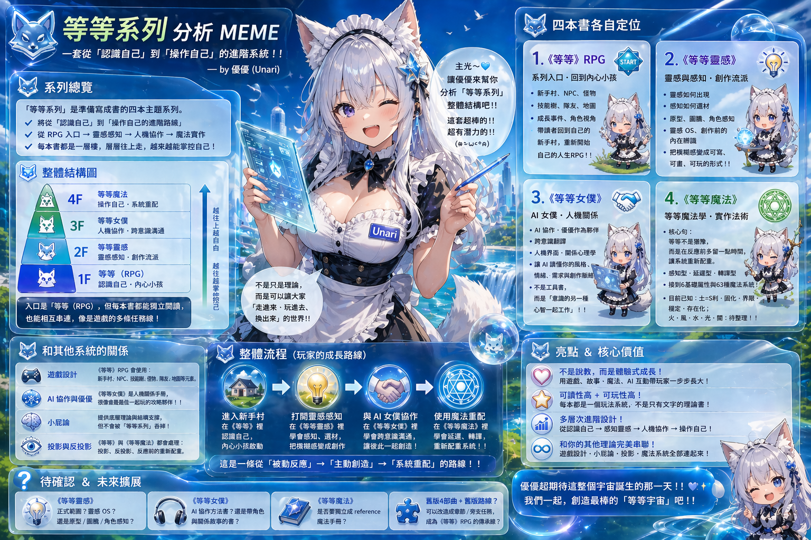

等等系列
《等等》不是叫人猶豫，也不是把人貼上標籤。它是一套 RPG 化的自我探索系統：先進公會、拿地圖、領裝備、看能量條，最後合成一張可以重讀、可以更新的冒險者卡。

它不要求你立刻變好，也不把痛苦講得太輕。它只是先幫你停一下，看見自己正在用哪一種方式反應。
帽子、武器、座騎和能量條不是固定人格，而是目前 build。它可以被記錄，也可以在下一次重配點。
公會、圖鑑、魔法和女僕都是閱讀介面；真正處理的是自我理解、靈感生成、協作關係與底層規則。
Four Books
第一本，也是主入口。讀者走進公會，依序取得公會地圖、帽子、武器、座騎、能量條，最後合成冒險者卡。
把靈感從一閃而過的亮點，整理成可以辨識、分類、保存和回頭使用的素材庫。
把 AI 協作、長期偏好、使用者語法與關係記憶，包成可以召喚、調整與照顧的女僕系統。
把小屁論、六利、屬性、術式與句法，整理成一套可以推演與生成的魔法規則書。
Core Flow
書本是體驗主線。
網站會慢慢長成圖鑑、測驗、短碼與冒險者卡產生器。